三頻道虛擬主持角色・第一階段概念稿
每個頻道 3 款：2 款向量（照晶片貓 rig 的部件分層，可以直接進第二階段 rig），1 款 AI 點陣（FLUX.2 klein 4B 本機生成，PNGtuber 差分）。
實景圖都是真模板渲染的第 2 頁投影片，角色固定在右下角，字幕是示意。每張的角色像素都量過：進入字幕帶（x 320–1600, y ≥ 880）和 meta 列（x 120–1520, y 832–872）的像素數都是 0（frames.json）。點實景圖可以看原尺寸。
對照：晶片貓（現行 rig）
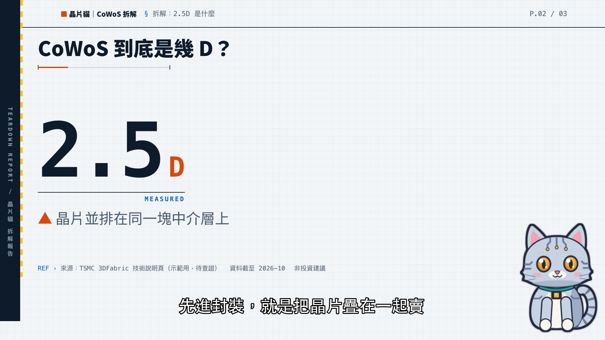
台灣科技產業拆解頻道的現行主持（Route A 向量 rig，idle 姿勢、真 motion 截圖）。新角色的實景圖用相同的右下角錨點，高度也接近這隻貓（約 350 px），可以直接比大小和存在感。
妖怪溯源所
水墨・民俗・溯源；夜讀古籍的深色版面
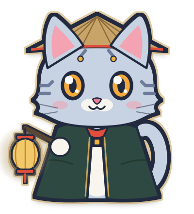
定裝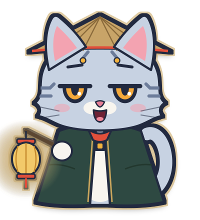
講古中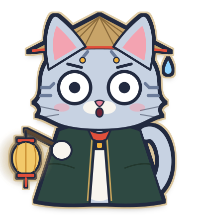
自己嚇到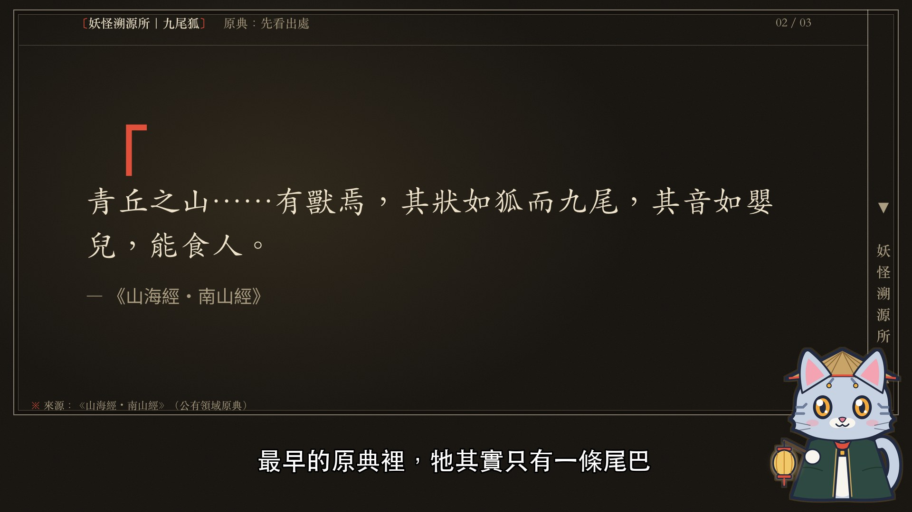
- 配色
- 晶片貓銀藍
#c7d2e2斗篷深銅綠 #2f4a42燈火金 #c9a45c硃砂 #e0503a - 人設
- 下班後到古書堆打工的晶片貓，戴斗笠、披斗篷、提一盞燈，帶觀眾走進原典。
- 個性
- 慢條斯理、愛賣關子；講到恐怖段落自己先怕。
- 口頭禪
- 「燈先點上——我們從最早的那一本講起。」
- 為什麼適合
- 沿用 channels/yokai.yaml 既定的「說書貓」設定。從主頻道導流過來的觀眾認得出是同一隻貓；燈籠的意思是「在黑暗裡找出處」。
- 風險
- 頻道辨識靠換裝道具撐。縮小時斗篷讀起來像一塊色塊；三個頻道都用同一隻貓，各頻道自己的角色感會比較弱。
- 第二階段
- 0.5–1 天：直接套 rig.html。頭、眼、嘴、耳、尾都不動，只加 hat／cape／lantern 三個圖層，再加一個燈籠擺動參數。
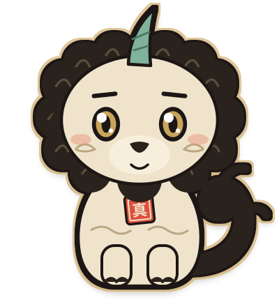
定裝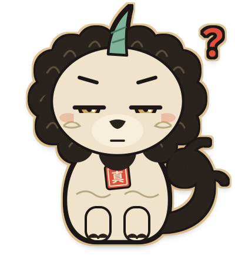
「出處呢？」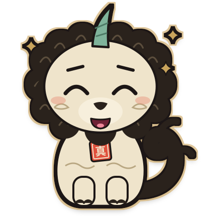
找到原典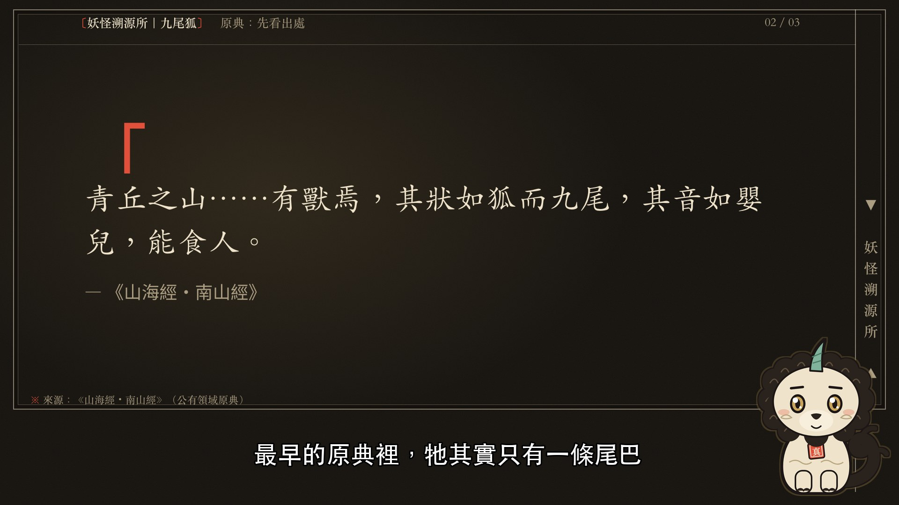
- 配色
- 宣紙身體
#efe4cb墨色鬃毛 #2a241c銅綠獨角 #7fb39b胸前硃砂印 #e0503a - 人設
- 獬豸：傳說能分辨是非、會用獨角頂撞說謊者的神獸。牠是溯源所的守門獸，專門頂翻「查無出處」的說法。
- 個性
- 嚴肅、較真；找到原典的時候藏不住開心。
- 口頭禪
- 「出處呢？」／「這段，原典沒寫。」
- 為什麼適合
- 牠本身就是東亞神話角色，直接體現頻道的「辨真偽、追原典」。胸前的「真」字印等於頻道的硃砂印章視覺，跟片頭的〔溯源〕印對得上。
- 風險
- 首爾市吉祥物「해치（Haechi）」就是獬豸的 Q 版，我無法確認兩者有多像，🔴 要人工比對。如果選這款，建議往水墨、鬃毛捲雲的方向再拉開差異。
- 第二階段
- 2–3 天：新 rig，但部件結構和貓幾乎一樣（head／eyes／brows／mouth／ears／mane／tail／horn）。motion 和 params 可以直接沿用，主要工作是重畫部件和調錨點。
Y3 蠹先生（書蟲學究）AI 點陣・PNGtuber
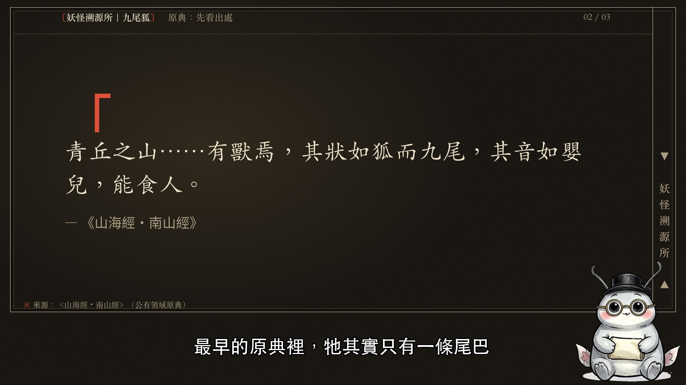
- 配色
- 銀灰
#c9ccd1宣紙米 #efe4cb墨黑帽 #1d1813黃銅眼鏡 #b08a3e - 人設
- 蠹魚（衣魚）是啃古書的小蟲。蠹先生在古籍裡住了幾百年，每一本原典都「親口嘗過」。
- 個性
- 學究、碎念，對版本差異很敏感。
- 口頭禪
- 「這一版我吃過，味道不對。」
- 為什麼適合
- 書蟲就是原典。水墨淡彩的質感跟頻道的 AI 水墨插畫最搭。
- 風險
- 圓胖灰身、米色肚子的坐姿剪影，跟知名動畫角色（龍貓）相近（🟡 我的判讀）。如果選這款，要改成細長身形重生。純 AI 輸出可能沒有著作權。
- 第二階段
- PNGtuber：每個角色要約 0.5 天挑差分、去背、修邊。PNG 疊加器（呼吸、擺動、換幀）是三個 AI 角色共用的，要做一次，約 1–1.5 天。
晶片貓下班了
便利貼漫畫：黃底、6px 黑線、硬投影；主力 Shorts
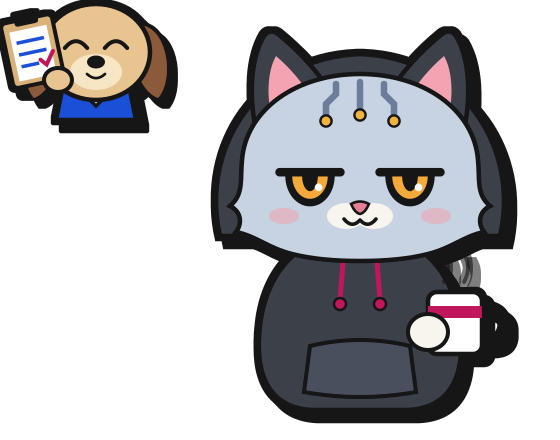
定裝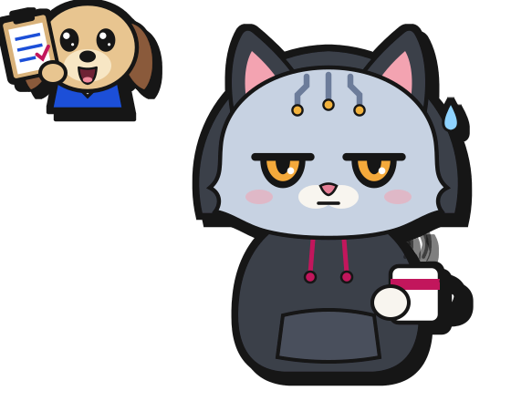
冷場（狗在交辦）叮！下班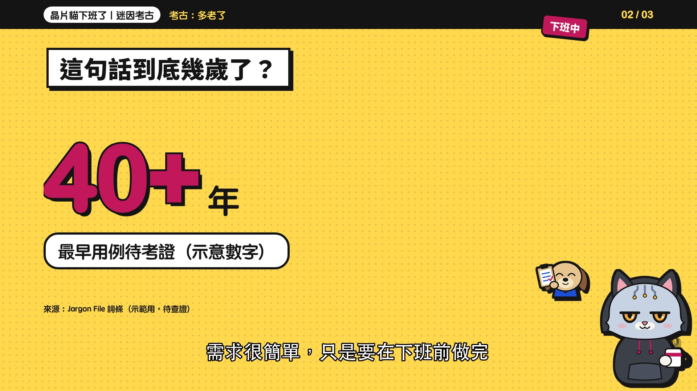
- 配色
- 帽 T 炭灰
#3b3f4a吐槽粉抽繩 #c2185bPM 狗襯衫藍 #1a4fd8PM 狗毛色 #e8c590 - 人設
- 晶片貓下班後換上帽 T、捧著馬克杯；PM 狗永遠在下班前五分鐘探頭進來。
- 個性
- 貓：省話、冷面吐槽。狗：熱情，永遠是「只是小改一下」。
- 口頭禪
- 貓：「……我已經下班了。」／狗：「這個應該很快吧？」
- 為什麼適合
- 照 channels/offwork.yaml 的品牌註記做。鋪陳→笑點的雙人相聲結構最適合冷笑話；品牌的 accent-2 藍本來就是保留給 PM 狗的。
- 風險
- 兩個角色比較佔畫面。狗只能放在 meta 列上方（第一版壓到 meta 列 1229 px，已經修正）。9:16 Shorts 的位置要另外定。
- 第二階段
- 2.5–3.5 天：貓套現有 rig，加 hood、mug 圖層（0.5–1 天）；PM 狗要做只有頭的小 rig（1–1.5 天）；cue 還要支援「誰在說話」（約 1 天）。
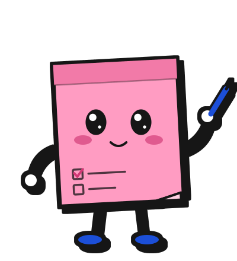
定裝「明天再說」被撕下來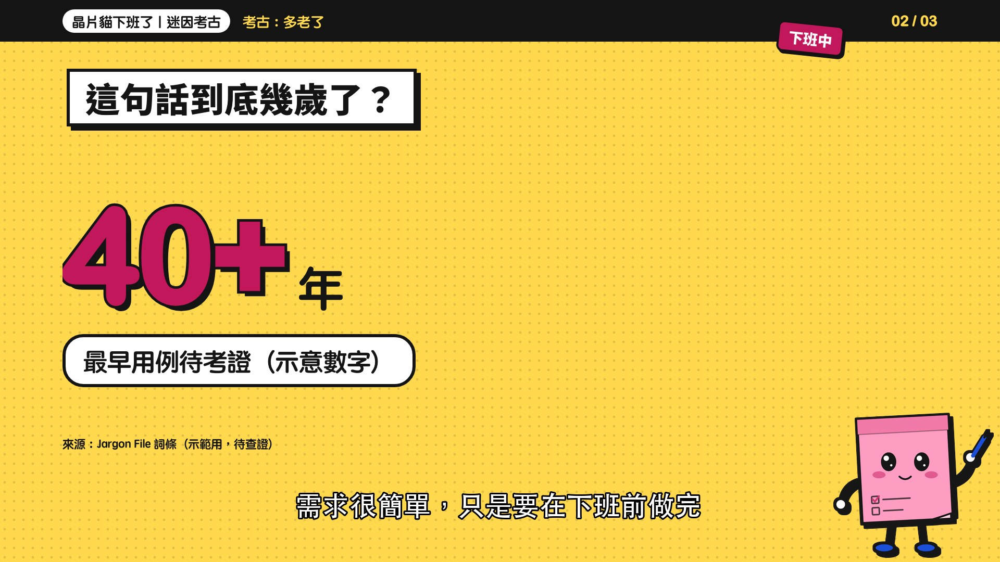
- 配色
- 便利貼粉
#ff9cc2膠條桃紅 #f27aa8藍鞋藍筆 #1a4fd86px 黑線 #141414 - 人設
- 被貼在螢幕邊三年、從來沒被撕下來的待辦便利貼。
- 個性
- 懶散、拖延專家，一被撕就慌。
- 口頭禪
- 「這件事……明天再說。」
- 為什麼適合
- 品牌視覺本來就是「便利貼漫畫」，角色就是品牌本身。造型極簡，Shorts 縮到很小也讀得出來。
- 風險
- 不是晶片貓，跟主頻道的 IP 連不起來；擬物角色的表情只能靠臉，張力比動物小。
- 第二階段
- 1–1.5 天：最簡單。紙片身體加火柴四肢，額外只有「紙角捲起」「身體彎曲」兩個參數。
O3 河豚上班族・氣氣AI 點陣・PNGtuber
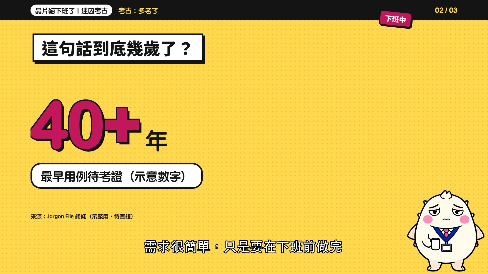
- 配色
- 奶白身體
#fbf6e4粉紅領帶 #e8418a藍色掛繩 #1f3fa8黑線 #141414 - 人設
- 一被交辦就會氣到膨脹的河豚上班族。
- 個性
- 忍氣吞聲，然後瞬間爆氣（膨脹本身就是表情）。
- 口頭禪
- 「我沒有生氣，我只是……有點腫。」
- 為什麼適合
- 「氣到膨脹」是可以一直重複的視覺笑點，跟冷笑話的「停 0.6 秒→笑點」節奏搭得上。
- 風險
- 「膨脹」這個招牌動作要另外生成，而且 AI 不保證是同一隻；品牌要求的硬投影也要後製補上。
- 第二階段
- PNGtuber（同 y3）。膨脹要額外做 1–2 張差分，或在疊加器裡用縮放模擬。
賽璐璐研究室
動畫用紙：米白紙、非照相藍格線、紅鉛筆
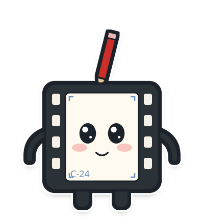
定裝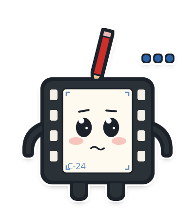
對帳中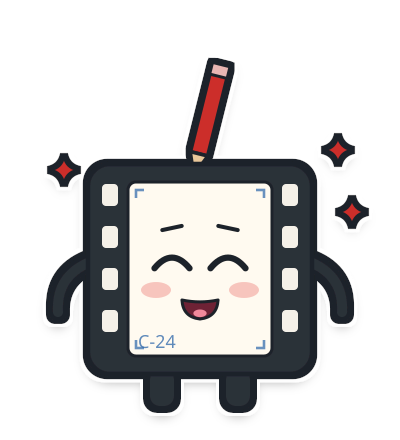
Cut！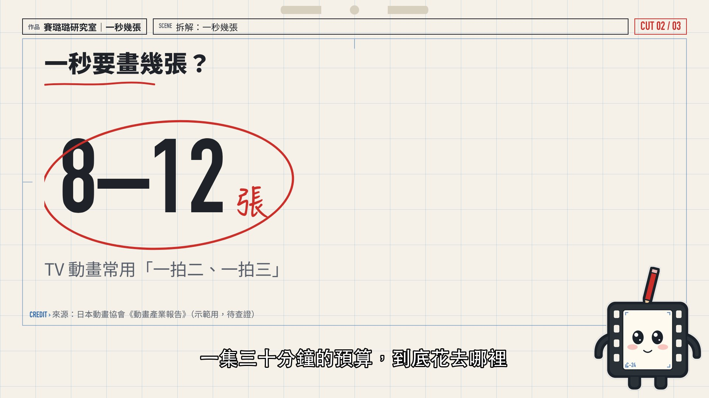
- 配色
- 底片炭黑
#2b3038畫格米白 #fffaf0紅鉛筆呆毛 #cc2f2a影色藍角標 #2a64a8 - 人設
- 從一卷舊底片剪下來的一格，在研究室幫忙對帳。
- 個性
- 認真、愛數數，講到數字就興奮。
- 口頭禪
- 「一秒 24 格，這一格是我。」／「Cut！先對到這裡。」
- 為什麼適合
- 照 channels/cel.yaml 既定方向。造型是動畫的物理單位（格），不擬人，也不像任何作品角色，著作權風險三款裡最低。
- 風險
- 親和力比人形角色低；「底片」比較像電影，不完全是動畫（但頻道名的賽璐璐本身也是膠片）。
- 第二階段
- 1–1.5 天：方塊身體，臉在畫格裡，加手臂和鉛筆呆毛（可以接耳朵的物理參數）。
定裝講解手勢「帳對不起來」
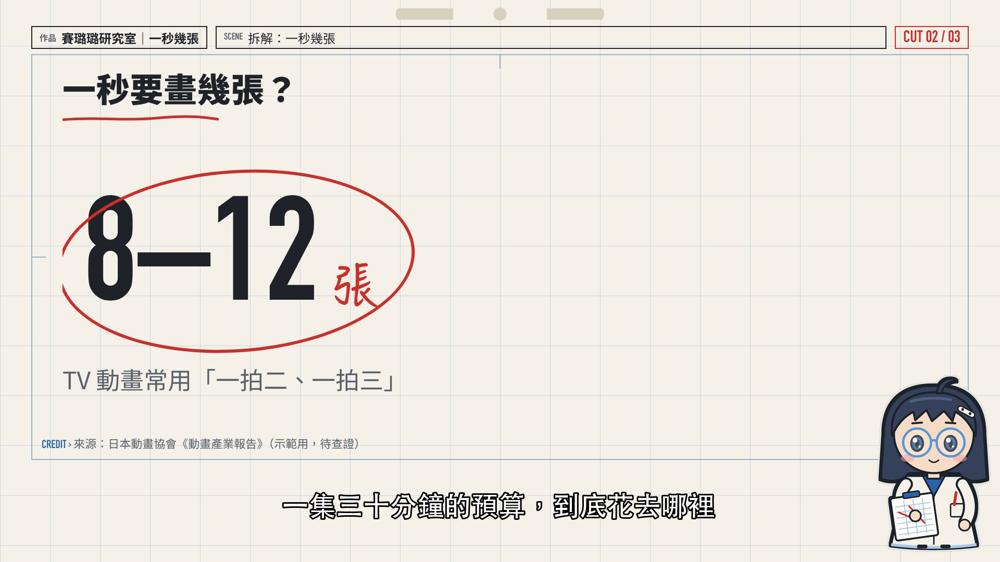
- 配色
- 藍灰髮
#34405a非照相藍眼鏡 #5a96d6影色藍領 #2a64a8紅鉛筆 #cc2f2a - 人設
- 研究室的 Q 版研究員，抱著攝影表（timesheet）對帳。
- 個性
- 冷靜、理工腦，看到不合理的數字就皺眉。
- 口頭禪
- 「這筆帳，對不起來。」
- 為什麼適合
- 最有「動畫感」，觀眾最容易投射，也做得出講解手勢。
- 風險
- Q 版人類研究員在動畫裡非常常見，「不像任何既有角色」只能靠人工比對，我沒辦法窮舉 🔴。rig 也是三款裡最難的（頭髮、眼鏡、手勢）。
- 第二階段
- 3–4 天：新 rig，要做頭髮前後兩層、眼鏡反光、手臂兩段關節和手勢姿勢。
C3 透透（賽璐璐片精）AI 點陣・PNGtuber
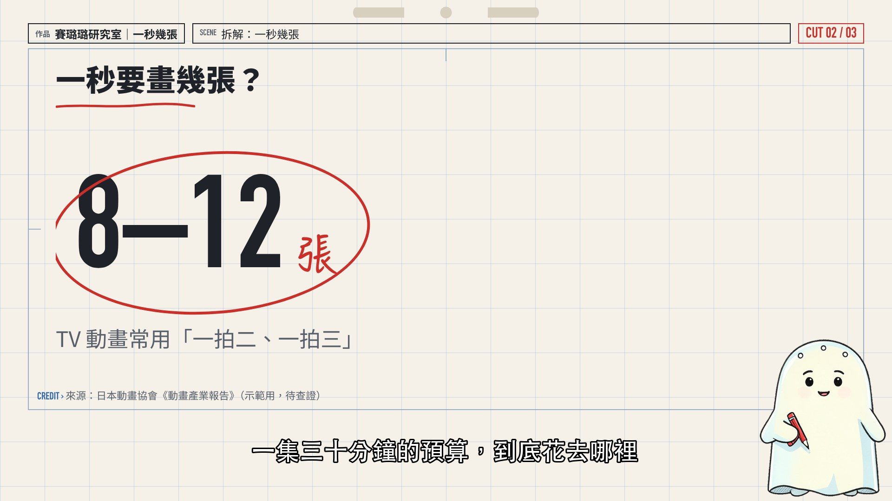
- 配色
- 米白片身
#fbf8ea淡藍透明感 #cfe3f0紅鉛筆 #cc2f2a鉛筆線 #1f2329 - 人設
- 一張被遺忘在倉庫的賽璐璐片，見證過動畫從手繪變成數位。
- 個性
- 溫和、懷舊，偶爾講幾句業界老故事。
- 口頭禪
- 「我那個年代，一張一張都是手塗的。」
- 為什麼適合
- 頻道名就是賽璐璐；頭頂的定位孔對應品牌的 peg bar 圖示。
- 風險
- 造型接近通用的「床單幽靈」，雖然不是特定角色，但辨識度偏低；模型也沒有畫出「透明」的質感。
- 第二階段
- PNGtuber（同 y3）。
AI 點陣路線：一致性量測
每格是「剪影 IoU／重疊區平均 RGB 差」，都是跟定裝圖比。差分是用 klein 多參考圖編輯（以定裝圖當參考）做的；drift 是同一段 prompt、換 seed、不給參考圖。
IoU 越接近 1，換幀時角色越不會跳動。
| 頻道 | blink | talk | surprised | smug | wave | drift | alt |
|---|
| yokai | 0.997 / 9 | 0.997 / 7 | 0.998 / 6 | 0.997 / 14 | 0.906 / 13 | 0.733 / 64 | 0.743 / 61 |
| offwork | 0.999 / 8 | 0.999 / 8 | 0.999 / 13 | 0.999 / 10 | 0.931 / 8 | 0.805 / 56 | 0.819 / 62 |
| cel | 0.999 / 6 | 0.999 / 5 | 0.999 / 6 | 0.999 / 6 | 0.920 / 7 | 0.801 / 26 | 0.874 / 26 |
設計原始碼：tools/chars_*.py（向量）、tools/ai_gen.py（生圖）、tools/frames.py（實景與禁區量測）、tools/ai_sheet.py（去背與一致性）。